Компиляция и компоновка
Как из нескольких файлов получается одна программа.
Этапы сборки
Препроцессор обрабатывает #include и условные директивы. Компилятор переводит каждую единицу трансляции в объектный код, а компоновщик объединяет объектные файлы и библиотеки. Сообщение об отсутствии объявления обычно появляется при компиляции, undefined reference — при компоновке.
c++ -std=c++20 -Wall -Wextra -c main.cpp -o main.o
c++ -std=c++20 -Wall -Wextra -c calculator.cpp -o calculator.o
c++ main.o calculator.o -o calculatorЗаголовки и имена
В заголовок обычно помещают объявления, определения шаблонов и подходящие inline-определения. Защитный макрос предотвращает повторное включение заголовка в одну единицу трансляции.
#ifndef CALC_CALCULATOR_HPP_
#define CALC_CALCULATOR_HPP_
namespace calc {
int Add(int left, int right);
}
#endifПространство имён позволяет обратиться к функции как calc::Add. Для функций и переменных на уровне пространства имён static даёт внутреннюю линковку. extern int counter; без инициализатора объявляет переменную, определение которой может быть в другом файле. У локальной переменной static меняет время хранения. mutable позволяет изменять конкретное поле через const-объект, например счётчик попаданий в кеш.
Самопроверка
Один заголовок с обычным определением функции включили в два .cpp. Какой инструмент заметит конфликт определений? Что изменится, если в заголовке оставить только объявление?
Компиляция
time g++ main.cpp измеряет время компиляции и компоновки. Чтобы измерить запуск программы, примените time к исполняемому файлу.
Много файлов хорошо
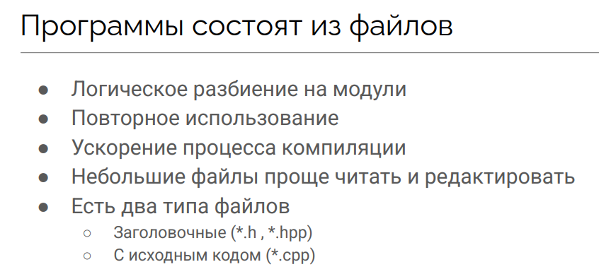
Этапы трансляции
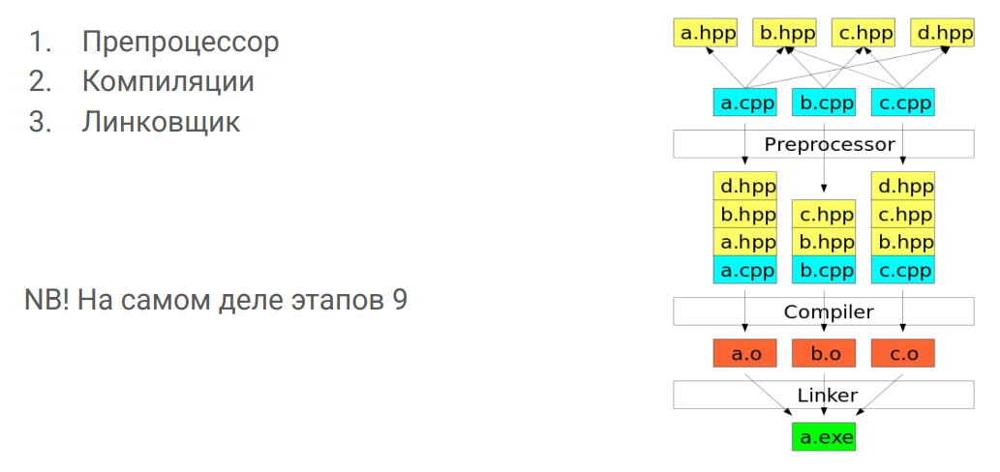
Препроцессор - собирает все a.h b.h относящиеся к файлу a.cpp и собирает их в столбики Компилятор- собирает все столбики в а.о Линковщик - линкует в а.ехе
Можно вызывать этапы отдельно
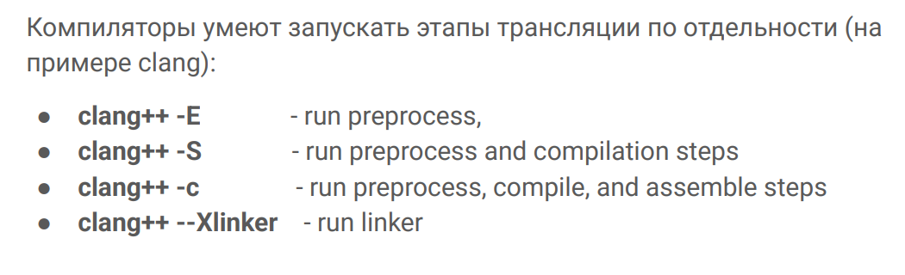
Объявление и определение
Declaration - объявление int add(&a); Definition - логика описание
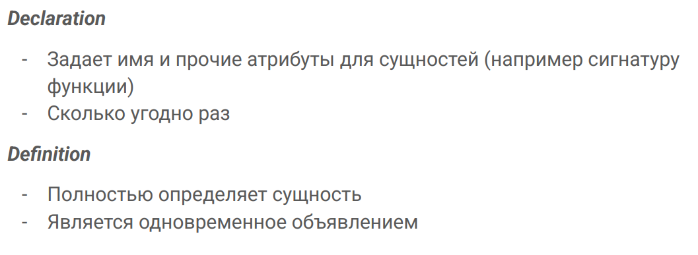
Заголовочный файл
Может содержать declaration definition объявление переменных структур и const
должен содержать pragma once - это директива препроцессора в C++, которая гарантирует, что заголовочный файл будет включен только один раз во время компиляции
Препроцессор
Язык препроцессора - специальный ЯП встроенный в с++
У него есть директивы Обозначаются # include <> или ""
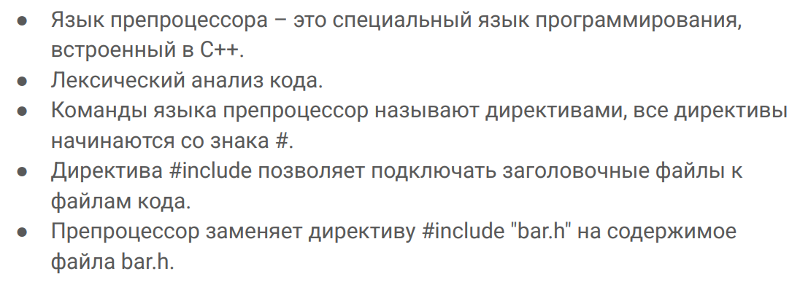
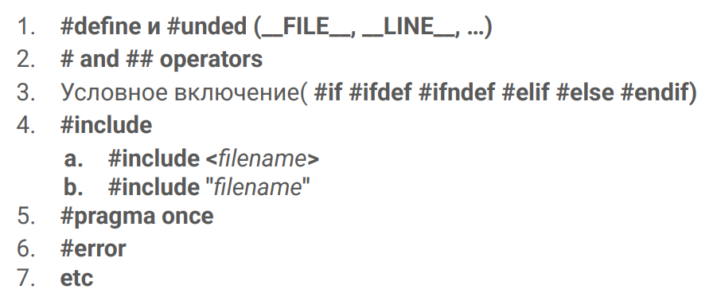
Макросы
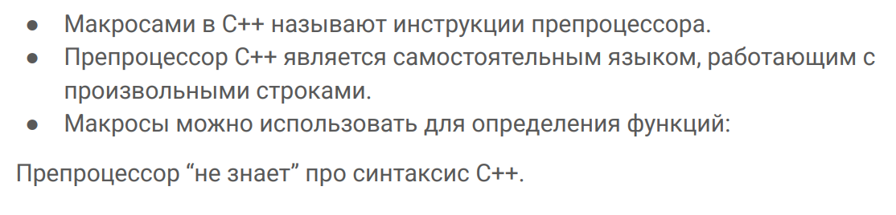
Это инструкции препроцессора Препроцессор работает с произвольными строками не знает про синтаксис C++
difine - лучше не использовать
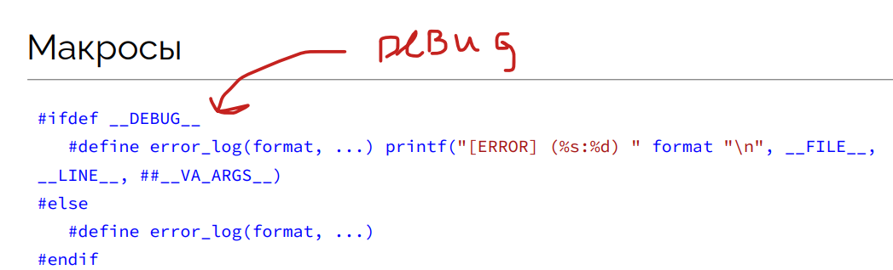
Стражи
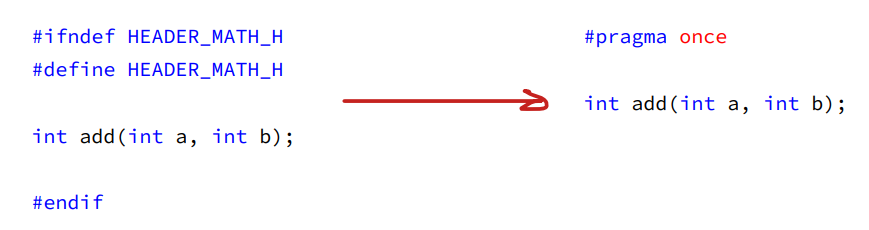
Компилятор
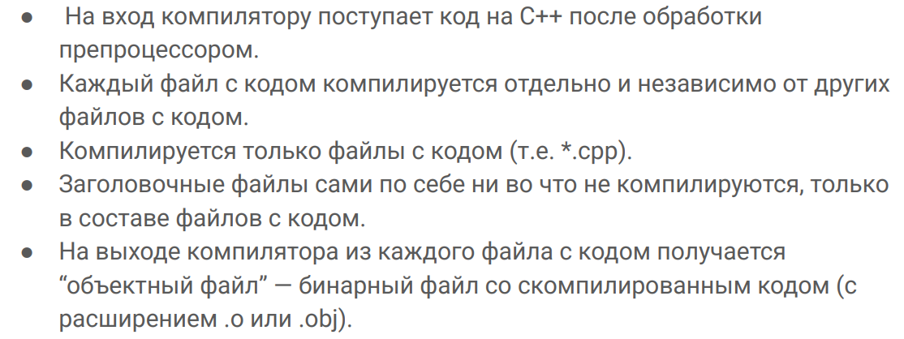
- компилятор превращает в лекссхему
- проверка правильности лекссхемы
- оптимизации
- код на ассемблере
- ассемблер в машинный код
- получаем отдельный объектный файл под каждую единицу трансляции- это столбики в препроцессоре
- Компоновщик объединяет объектные файлы и библиотеки, связывая обращения к функциям и переменным с их определениями.
Компоновщик(линкер)
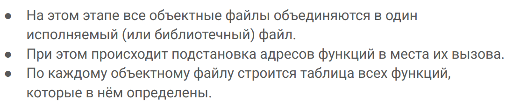
External linkage - из всех единиц трансляции Internal linkage - только из текущей ед. трансляции No linkage - только текущий скоуп
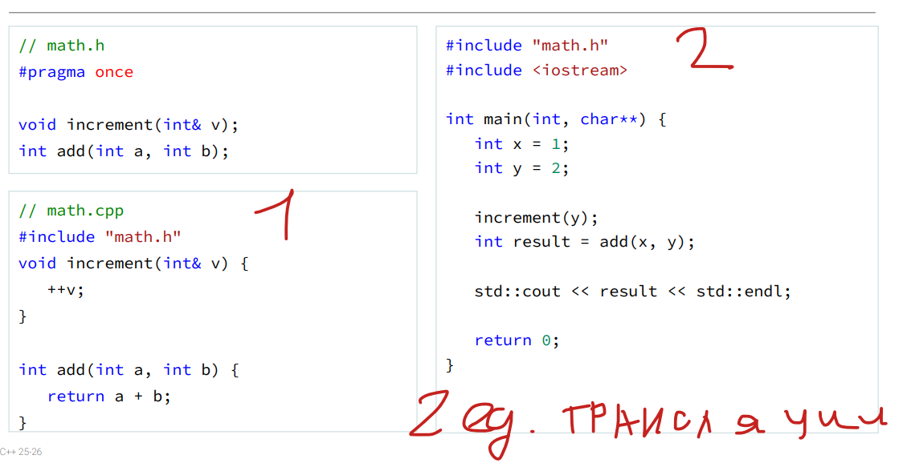
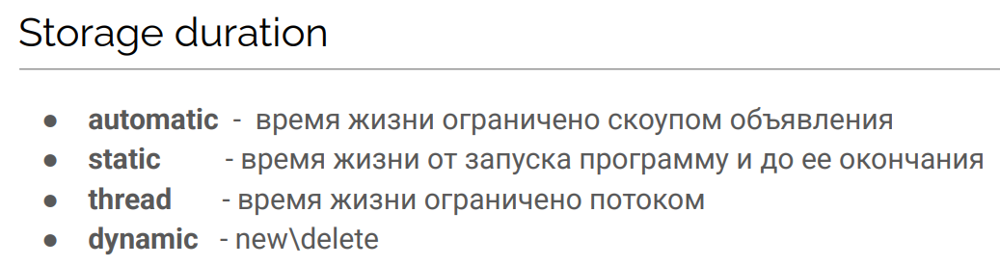
Спецификатор класса хранилища
1. static — статическое время жизни + внутренняя линковка
- Переменная существует все время работы программы.
- Если объявлена внутри функции, то значение сохраняется между вызовами.
- Если объявлена в глобальной области, то она доступна только в этом файле (internal linkage).
2. extern — статическое время жизни + внешняя линковка
- Переменная существует всегда (как и
staticглобальный). - Но
externговорит: переменная определена где-то в другом файле.
3. threadlocal — хранение на уровне потока
У каждой нити (thread_) будет своя копия переменной. Не общая, как у глобальных, а индивидуальная.
4. mutable — разрешает изменять поле объекта даже в const методах
- Помеченное поле можно менять, даже если объект объявлен
const. - Используется для скрытого состояния (кэш, счётчики).